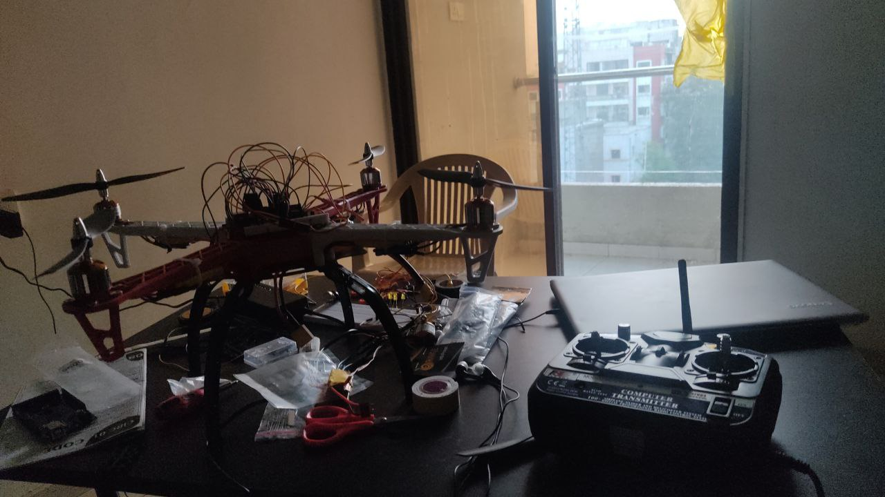

X-CAM
X-CAM is an automated aerial surveillance platform incorporating intelligent loop logic to handle self-charging operations, overcoming flight endurance restrictions.
Project Overview
The system continuously monitors its battery health while executing a predefined surveillance mission. Once the battery level falls below a safe threshold, the drone autonomously navigates back to a designated charging station, lands accurately, initiates charging, and resumes its mission after reaching the required charge level. This significantly reduces downtime and enables near-continuous operation.

Problem Statement
Traditional surveillance drones are constrained by limited battery life and require operators to manually retrieve, recharge, and redeploy the vehicle. This process increases operational costs, reduces mission availability, and limits the practicality of drone-based surveillance in remote or long-duration applications.
Proposed Solution
X-CAM introduces a fully autonomous workflow that combines mission execution, battery monitoring, precision landing, and automated charging. The drone can make intelligent decisions regarding energy management and safely return to its charging station whenever required. Once recharged, it is capable of resuming surveillance operations without manual assistance.
Key Features
- Autonomous surveillance and waypoint-based navigation
- Real-time battery monitoring and decision making
- Automated return-to-home functionality
- Precision landing on charging dock
- Automated charging and mission resumption
- Reduced operator intervention for long-duration deployments
Technologies Used
- Arduino-based embedded control system
- APM (ArduPilot Mega) Flight Controller
- Waypoint Navigation and Mission Planning
- Battery Management System
- Autonomous Return-to-Charging Logic
Intellectual Property Status
Filed and published under Indian utility tracking loops for intellectual property novelty validation.